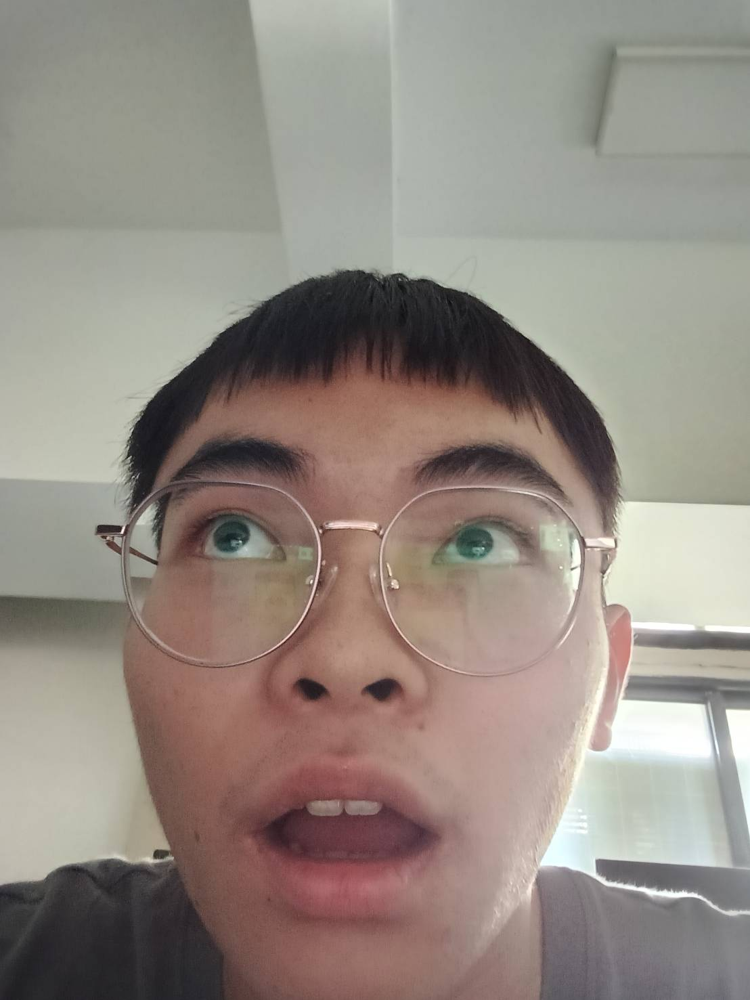
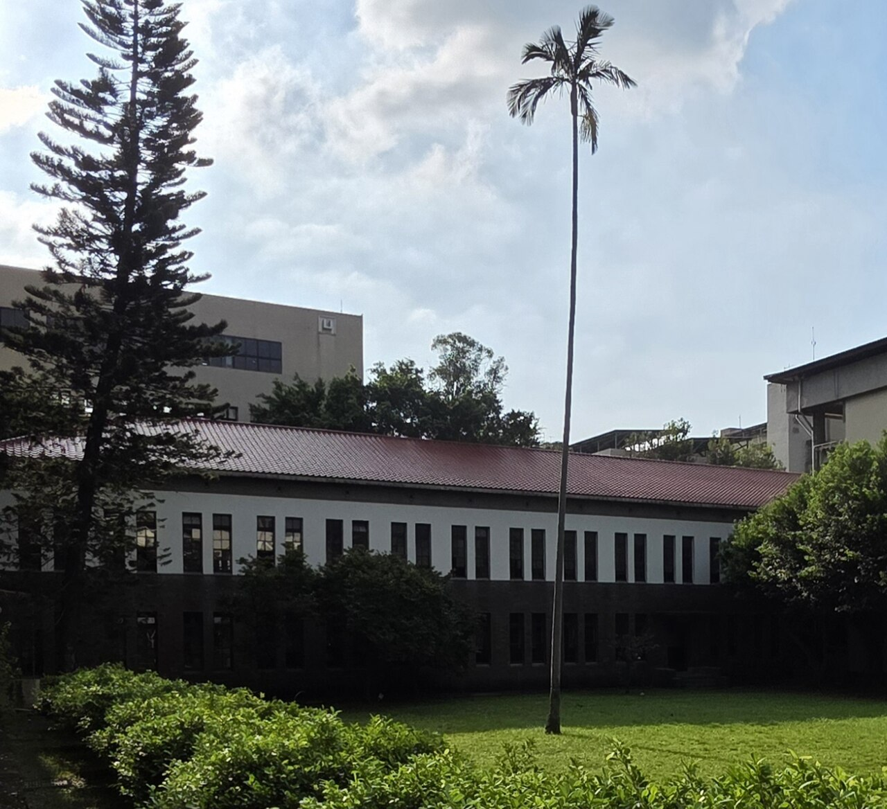
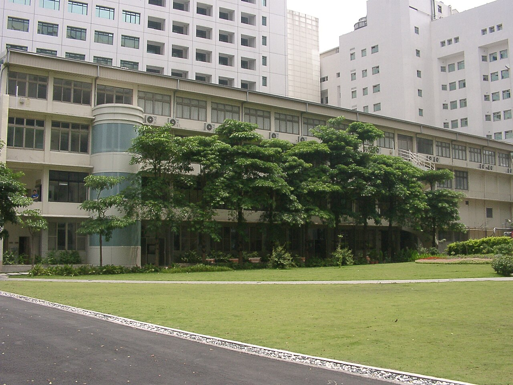

99
PR 99國際運算思維挑戰賽

帶著熱忱探索，帶著關懷同行。
A LITTLE ABOUT ME
我曾在國立師大附中求學，是一個遇到問題願意多問一步、面對任務會認真負責的人。 從科學實驗到人文閱讀，我享受探索新知；在團隊和服務中，我也學著主動溝通、 勇於承擔，讓每次挑戰都成為前進的養分。
MY HIGH SCHOOL YEARS
高中時光在師大附中度過。我在這裡投入學生自治與紅十字會服務， 也從物理探究、閱讀和自主學習中，練習提問、合作與表達。 每一次承擔與嘗試，都讓我更知道自己想成為怎樣的人。

A FUTURE GOAL
中國醫藥大學醫學系是我努力準備、期待前往的目標。 過去投入生物與化學學習，也參與校園救護服務； 我希望把探究問題的耐心與關懷他人的初心，帶進未來的醫學學習。

A RECORD OF GROWTH
不把挑戰當作阻礙，而是一次次累積實力、走得更遠的機會。
PR 99國際運算思維挑戰賽
TOEIC以語言連結更廣的知識
小時志工服務在實際參與中學習關懷
物理探究實作競賽初賽素養測驗獲獎；複賽實作優良
LEARNING THROUGH CURIOSITY
從實驗室裡的物理探究，到以正向心理學為題的自主學習， 我在卡關時練習重新整理問題、尋找方法，也把每一步的收穫變成向前的底氣。
投入繩波與水溶液實驗，在反覆測試中培養科學探究力。
研究正向心理學，把所學轉化為面對挑戰的積極力量。
透過閱讀與寫作，整理思緒，也學會理解不同角度。
CARE IN ACTION
我投入紅十字會與校園服務，支援游泳錦標賽、運動會的救護站，也參與淨街行動。 擔任幹部時，我協助溝通、凝聚團隊；這些經驗讓我更相信， 每個人都能用可靠的行動，為身邊的人帶來支持。
「真正的幫助，從願意看見別人的需要開始。」 我從志願服務中帶走的提醒